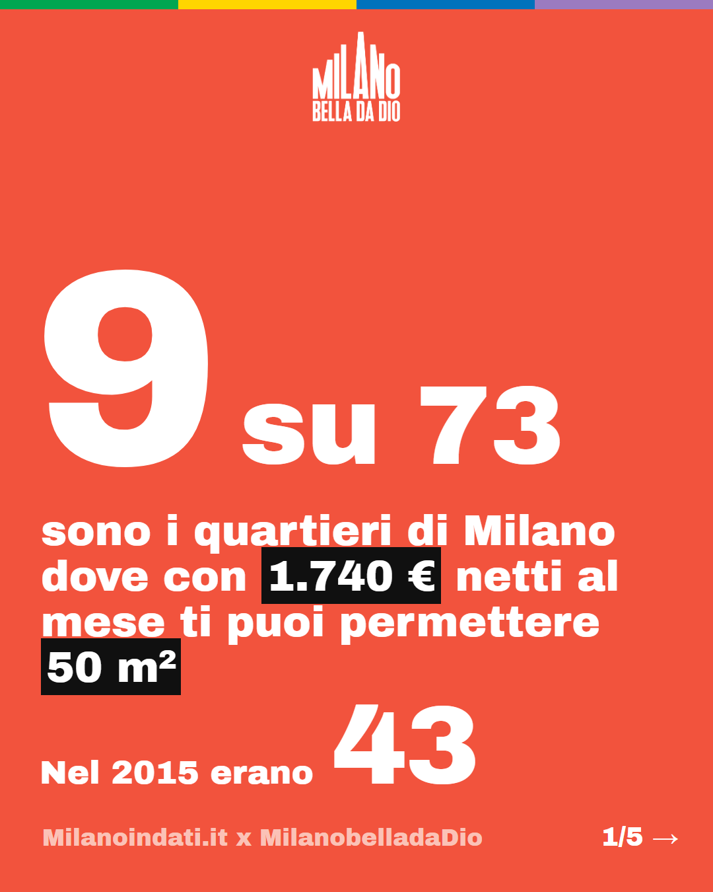
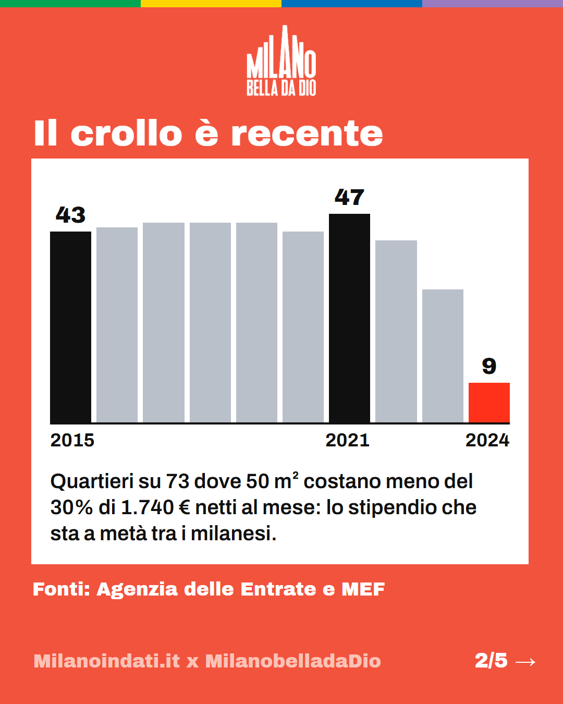
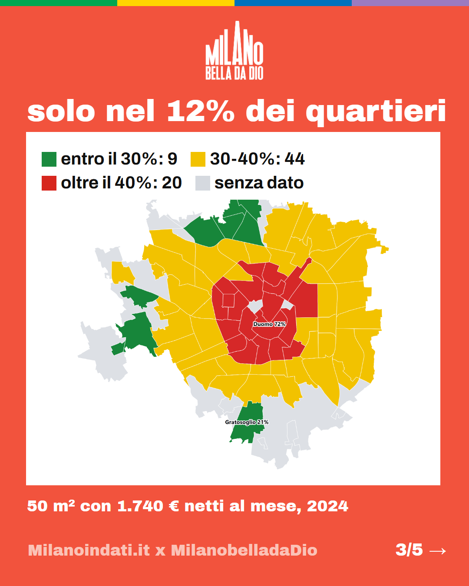
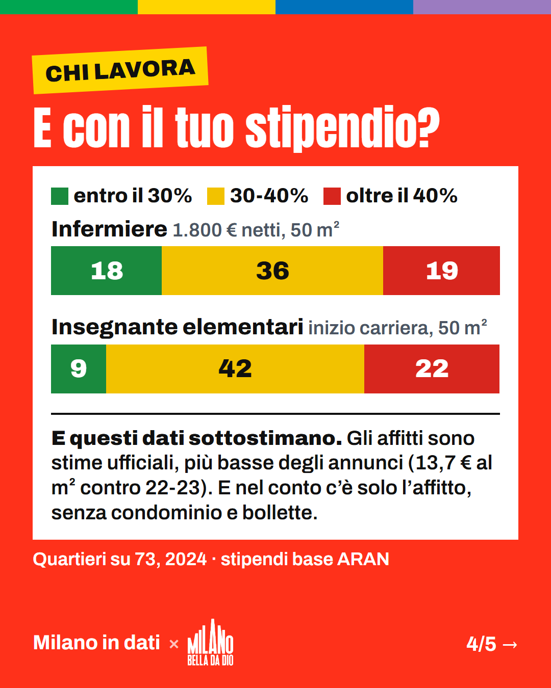

Post casa · Milano in dati × Milano Bella da Dio
Anteprima del carosello (5 slide, 1080×1350) e testo del post. Collab: invitare @milanoindati.




Testo del post
Con 1.750 € netti al mese, in quanti quartieri di Milano puoi vivere da solo in 50 m²? In 9 su 73. Nel 2021 erano 47. In tre anni sono spariti quasi tutti. 👩⚕️ Infermiere, 1.800 € netti: 18 quartieri 👩🏫 Maestra a inizio carriera, 1.670 € netti: 9 quartieri E la realtà è peggio di così. Gli affitti che usiamo sono le stime ufficiali dell'Agenzia delle Entrate, più basse dei prezzi degli annunci. E contiamo solo l'affitto: niente condominio, niente bollette. Come contiamo: una casa "te la puoi permettere" se l'affitto non supera il 30% dello stipendio. 1.750 € è lo stipendio netto che sta a metà tra i milanesi: metà guadagna di più, metà di meno. E con il tuo stipendio quanti quartieri restano? Fai la prova su milanoindati.it/permettersi (link in bio di @milanoindati) e scrivicelo nei commenti 👇 Dati 2024: Agenzia delle Entrate (OMI), MEF, ARAN. Elaborazione Milano in dati. #milano #affitti #caroaffitti #casa #milanoindati